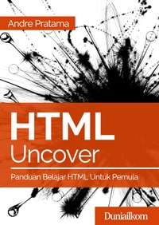
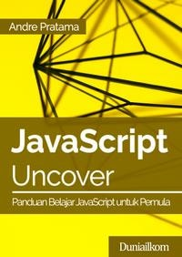
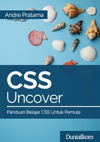
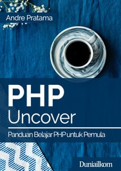
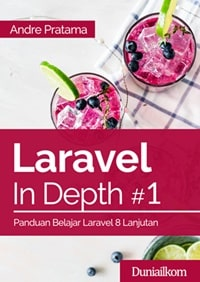
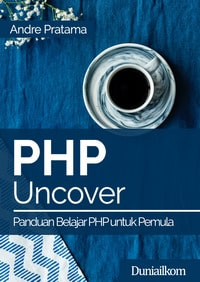
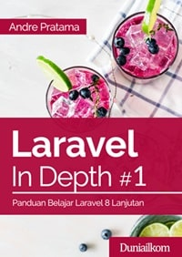

Data Buku
   
 

Santri Koding
Rp. 50.000
Golang, atau Go adalah bahasa pemrograman yang lahir di tahun 2009. Golang memiliki banyak kelebihan, terbukti dengan banyaknya perusahaan besar yang menggunakan bahasa ini dalam pengembangan produk-produk mereka, hingga level production tentunya.

Santri Koding
Rp. 45.000
Buku ini cocok bagi siapa saja yang ingin mulai belajar pemrograman di platform Node.js khususnya untuk membangun aplikasi web. Syarat yang dibutuhkan adalah pembaca setidaknya pernah atau sudah bisa memakai bahasa pemrograman JavaScript.

Membangun Rest API dan Dashboard Toko Online dengan Django dan Payment Gateway
Rp. 45.000
Pada bab pertama kita akan melakukan persiapan mulai dari instalasi bahasa pemrograman Python, MySQL, dan tool pendukung lainnya seperti Git, Postman dsb. Ada dua studi kasus yang akan kita pelajari yaitu membangun sebuah Dashboard Admin dan Rest API sebuah toko buku online. Di dalam buku ini kita juga akan belajar materi dasar-dasar Django maupun Django Rest Framework terlebih dahulu sebagai persiapan sebelum masuk ke materi studi kasus.

Rest API - Studi Kasus Portal Berita.
Rp. 100.000
Buku ini akan membahas pembuatan Rest API serta Dashboard Admin untuk sebuah web portal berita. Beberapa teknologi yang dipakai diantaranya: untuk database menggunakan PostgreSQL sedangkan untuk backendnya menggunakan Framework yang berbasis bahasa Python yaitu Django. Buku ini sendiri kami tujukan untuk tingkat pemula sampai menengah. Sebelum mempelajari buku ini, kami harapkan pembaca sudah menguasai atau paling tidak pernah mempelajari dasar-dasar bahasa pemrograman Python.

Membangun Restful API dengan Lumen - Studi Kasus Aplikasi Kasir
Rp. 169.000
Buku ini akan membahas dan mengajarkan kita bagaimana cara menjadi seorang developer handal. Di dalam buku ini hanya fokus membahas Backend pembuatan layanan web service berupa Rest API.

Spasi: 30 Tip Koding Laravel yang Lebih Manusiawi dan Disukai Rekan Kerjamu
Rp. 45.000
Buku ini berisi kumpulan tip singkat, mudah dilakukan, dan minim efek samping yang bisa kita terapkan ketika koding Laravel. Perubahan kecil, jika dilakukan secara konsisten, bisa menghasilkan efek besar.

Utama Jaya adalah toko buku ILMU KOMPUTER, NOVEL, DAN KOMIK terbesar dan terlengkap di Indonesia yang menyediakan aneka buku berkualitas, alat tulis hingga perlengkapan kantor lainnya.
Utama Jaya memiliki beberapa kanal yang akan membantu teman-teman dalam belajar, seperti TUTORIAL SET, KELAS ONLINE dan EBOOK.
Buku ILMU KOMPUTER di Utama Jaya merupakan kumpulan dari tutorial yang sudah di disusun mulai dari dasar, step-by-step dan pembahassannya sangat terstruktur.
ONLINE di Utama Jaya adalah sebuah layanan dimana teman-teman bisa belajar langsung dengan konten berupa video dan bisa diakses dimana dan kapanpun saja.
Keuntungan belanja di Toko Buku Online kami :
1. Sangat mudah memilih buku yang anda cari berdasarkan kategori
2. Kolom pencarian memudahkan anda untuk mencari buku sesuai keinginan anda
3. Kami akan selalu berusaha memberikan pelayanan yang cepat dan murah untuk pencinta buku di tanah air